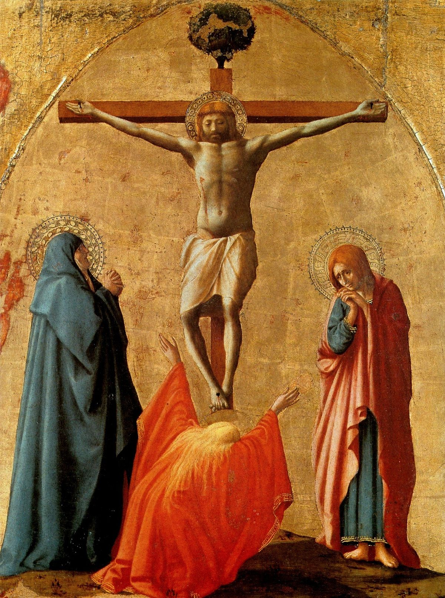
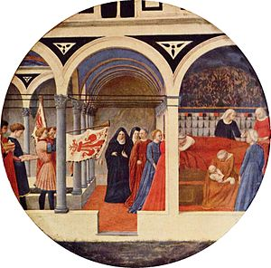
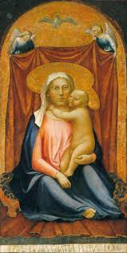
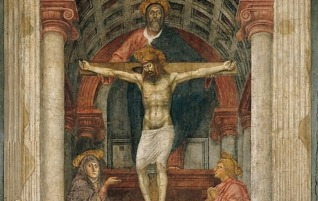
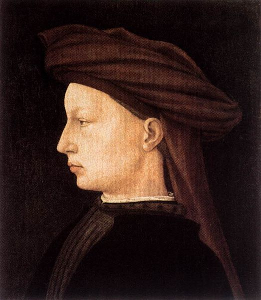
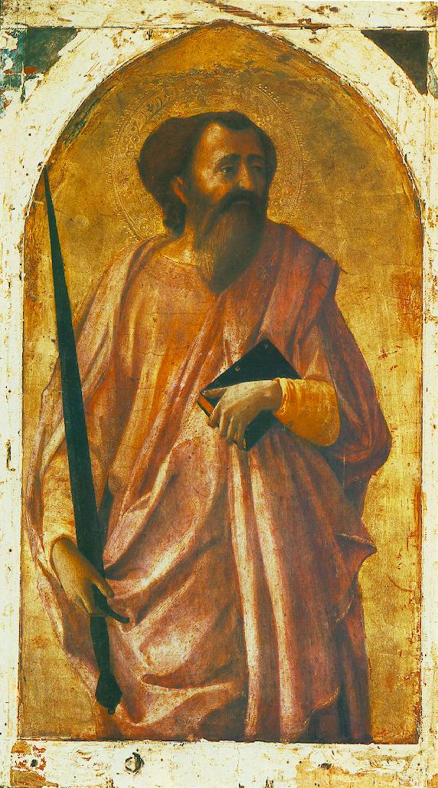
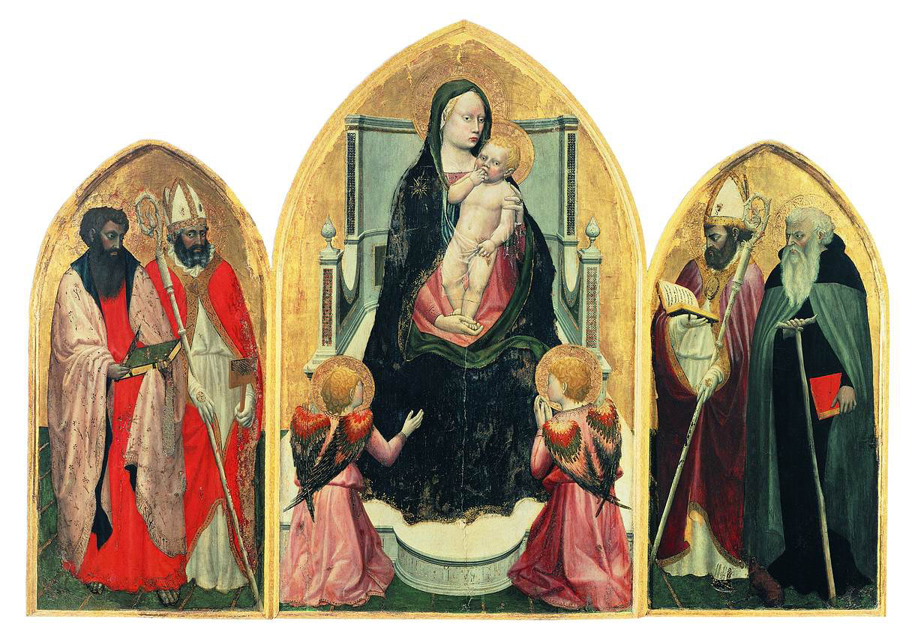
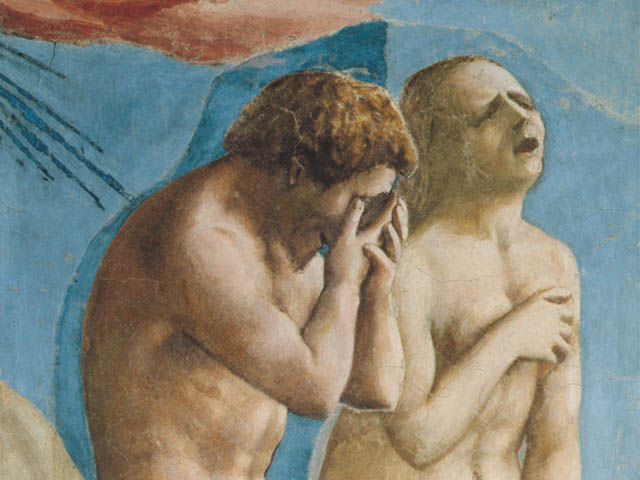
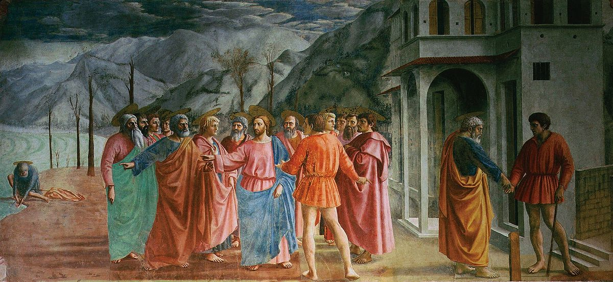

- Overview
-
Masaccioborn Tommaso di Ser Giovanni di Simone, was a Florentine artist who is regarded as the first great Italian painter of the Quattrocento period of the Italian Renaissance. According to Vasari, Masaccio was the best painter of his generation because of his skill at imitating nature, recreating lifelike figures and movements as well as a convincing sense of three-dimensionality. Masaccio died at twenty-six and little is known about the exact circumstances of his death.
The name Masaccio is a humorous version of Maso (short for Tommaso), meaning "clumsy" or "messy" Tom. The name may have been created to distinguish him from his principal collaborator, also called Maso, who came to be known as Masolino ("little/delicate Tom").
- Career
-
- Masaccio’s first painting was the ‘San Giovenale Triptych’ that was completed in 1422. The painting was meant for the Church of San Giovenale and shows Madonna in the company of angels. The particular painting also shows the sort of influence the Florentine school of painting had on Masaccio as a young artist.
- In 1425, Masaccio created one of his most famous works in the form of ‘The Expulsion From the Garden of Eden’ that depicts the expulsion of Adam and Eve from the Garden of Eden and the most important aspect of the painting are the expressions on the faces of the figures. The painting had a deep influence on Michelangelo. Masaccio completed another famous painting titled ‘The Tribute Money’ in the same year.
- Masaccio got the commission to paint the altarpiece at Church of Santa Maria del Carmine located in Pisa in the year 1426 and it was one of the most important commissions of his career. There were many different panels in the altarpiece and although many of the panels were lost, the central one featuring ‘Madonna and the Child’ is regarded by critics as the most important one from the artistic perspective.
- In 1427, Masaccio started work on his most famous work; the ‘Holy Trinity’ at the Santa Maria Novella Church in Florence. The ‘Trinity’ comprises of the Holy Spirit and the father and son in the fresco. The dove in the work is what represents the Holy Spirit and it is regarded as his masterpiece in a career in which he produced many.
- After producing ‘The Nativity’, Masaccio left for Rome and some historians believe that he helped his long time artistic partner Masolino with his work.
- Masaccio’s first painting was the ‘San Giovenale Triptych’ that was completed in 1422. The painting was meant for the Church of San Giovenale and shows Madonna in the company of angels. The particular painting also shows the sort of influence the Florentine school of painting had on Masaccio as a young artist.
- On View
-
- National Gallery of Art East Building, Washington D.C.
ArtWorks

A chapel in Santa Maria del Carmine in Pisa commissioned an altarpiece from Masaccio on February 19, 1426 for the sum of 80 florins. Payment for the work was recorded on December 26 of that year. The altarpiece was dismantled and dispersed in the 18th century, but an attempted reconstruction was made possible due to a detailed description of the work by Vasari.
Crucifixion
A chapel in Santa Maria del Carmine in Pisa commissioned an altarpiece from Masaccio on February 19, 1426 for the sum of 80 florins. Payment for the work was recorded on December 26 of that year. The altarpiece was dismantled and dispersed in the 18th century, but an attempted reconstruction was made possible due to a detailed description of the work by Vasari.

This painting, also known as the Berlin Tondo, is a desco da parto, or birthing-tray painted by the Italian Renaissance artist Masaccio, c. 1427–1428, though the work is regarded as from his workshop or by a "follower" by many recent scholars.
Desco Da Parto
This painting, also known as the Berlin Tondo, is a desco da parto, or birthing-tray painted by the Italian Renaissance artist Masaccio, c. 1427–1428, though the work is regarded as from his workshop or by a "follower" by many recent scholars.

The painting contains six figures: the Madonna and Child and four angels. The Madonna is the centre figure and is larger than any of the others to signify her importance. Christ sits on her knees, eating grapes offered to him by his mother. Although he is an exceedingly babyish baby (in comparison to the babies of Masaccio's immediate predecessors, like Lorenzo Monaco or Gentile da Fabriano), the grapes are a symbol of his blood – like the red wine of Communion – which indicates Christ's awareness of his eventual death.
Madonna and Child
The painting contains six figures: the Madonna and Child and four angels. The Madonna is the centre figure and is larger than any of the others to signify her importance. Christ sits on her knees, eating grapes offered to him by his mother. Although he is an exceedingly babyish baby (in comparison to the babies of Masaccio's immediate predecessors, like Lorenzo Monaco or Gentile da Fabriano), the grapes are a symbol of his blood – like the red wine of Communion – which indicates Christ's awareness of his eventual death.

The Holy Trinity, with the Virgin and Saint John and donors (Italian: Santa Trinità) is a fresco by the Early Italian Renaissance painter Masaccio. It is located in the Dominican church of Santa Maria Novella, in Florence.
Masaccio Holy Trinity
The Holy Trinity, with the Virgin and Saint John and donors (Italian: Santa Trinità) is a fresco by the Early Italian Renaissance painter Masaccio. It is located in the Dominican church of Santa Maria Novella, in Florence.

Portrait of a Young Man is a painting attributed to the Italian Renaissance painter Masaccio, although this attribution is disputed.The subject of this painting wears a chaperon.
Portrait of a Young Man
Portrait of a Young Man is a painting attributed to the Italian Renaissance painter Masaccio, although this attribution is disputed.The subject of this painting wears a chaperon.

Saint Paul is a painting by the Italian Renaissance painter Masaccio. It depicts Paul of Tarsus.A chapel in Santa Maria del Carmine in Pisa commissioned an altarpiece from Masaccio on February 19, 1426 for the sum of 80 florins. Payment for the work was recorded on December 26 of that year.
Saint Paul
Saint Paul is a painting by the Italian Renaissance painter Masaccio. It depicts Paul of Tarsus.A chapel in Santa Maria del Carmine in Pisa commissioned an altarpiece from Masaccio on February 19, 1426 for the sum of 80 florins. Payment for the work was recorded on December 26 of that year.

he San Giovenale Triptych or Cascia Altarpiece is a 1422 painting by Italian Renaissance artist Masaccio, housed in a museum behind the church of Cascia di Reggello, in the Roman Pieve of San Pietro di Cascia near Florence, Italy.
San Giovenale Masaccio
he San Giovenale Triptych or Cascia Altarpiece is a 1422 painting by Italian Renaissance artist Masaccio, housed in a museum behind the church of Cascia di Reggello, in the Roman Pieve of San Pietro di Cascia near Florence, Italy.

Sant'anna Metterza
The Virgin and Child, with its powerful volume and solid possession of space by means of an assured perspectival structure, is one of the earliest works credited to Masaccio. But for one, the angels, very delicate in their tender forms and pale, gentle colouring, are from the more Gothic brush of Masolino; the angel in the upper right hand curve reveals the hand of Masaccio.

The fresco is a single scene from the cycle painted around 1425 by Masaccio, Masolino and others on the walls of the Brancacci Chapel in the church of Santa Maria del Carmine in Florence. It depicts the expulsion of Adam and Eve from the garden of Eden, from the biblical Book of Genesis chapter 3, albeit with a few differences from the canonical account
The Expulsion from the Garden of Eden
The fresco is a single scene from the cycle painted around 1425 by Masaccio, Masolino and others on the walls of the Brancacci Chapel in the church of Santa Maria del Carmine in Florence. It depicts the expulsion of Adam and Eve from the garden of Eden, from the biblical Book of Genesis chapter 3, albeit with a few differences from the canonical account

Painted in the 1420s, it is widely considered among Masaccio's best work, and a vital part of the development of renaissance art.The Tribute Money suffered great damage in the centuries after its creation, until the chapel went through a thorough restoration in the 1980s.
The Tribute Money
Painted in the 1420s, it is widely considered among Masaccio's best work, and a vital part of the development of renaissance art.The Tribute Money suffered great damage in the centuries after its creation, until the chapel went through a thorough restoration in the 1980s.
×


{kind=link}
{kind=link}
{kind=link}
{kind=link}
{kind=link}
{kind=link}
{kind=link}